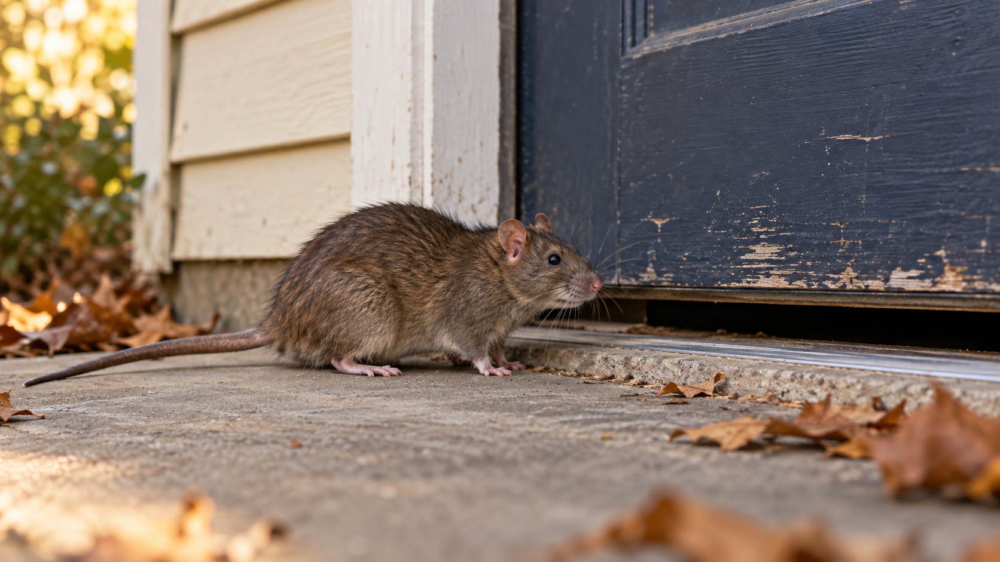

Georgia · Rats
Rats in Georgia: check your property before winter
As cooler weather approaches, check the places where rodents could enter your home or workplace. Food, water, shelter, and an opening can give them what they need. You do not have to wait until November to act on signs you see now.

Look for signs, then find the cause
Droppings, gnawed food packages, nesting material, and repeated sounds can point to rodent activity. An inspection can help identify the animal and find where it is getting in. Do not assume every sound overhead is a rat. CDC rodent control guidance
Rats can damage materials as they gnaw and nest. The repair work needed depends on what the inspection finds. If wiring may be damaged, ask a qualified electrical professional to assess it. Norway rat management guide hosted by Georgia DNR (PDF)
Check the entry points
Look around doors, vents, pipe openings, roof edges, and the foundation from a safe place. Small gaps matter. Ask for the openings to be checked for the animal present. CDC sealing guidance
If animals are already inside, coordinate the removal and sealing work so the repair plan addresses that activity too.
Reduce food and shelter
- Store food in closed containers.
- Put pet food away after feeding.
- Keep trash containers closed and clean up spills.
- Reduce clutter that could provide hiding places.
- Have damaged doors, vents, and openings repaired.
These are practical ways to reduce access to food and shelter. CDC sealing guidance
Leave droppings undisturbed until cleanup is planned
Do not sweep or vacuum rodent droppings. That can put contaminated particles into the air. Use the CDC’s cleanup guidance for the area involved, and get help for a heavy infestation or a space you cannot enter safely. CDC rodent cleanup guidance
If you feel ill after contact with rodents or their waste, tell a healthcare professional about the contact. Pest service does not replace medical care. CDC rodent cleanup guidance
Ask for a plan that fits the building
Before work starts, ask how the animal will be identified, how current activity will be handled, and which gaps need repair. The written estimate should explain cleanup, follow-up visits, and any warranty terms. In a shared building, agree on who will handle food storage, trash, and maintenance.